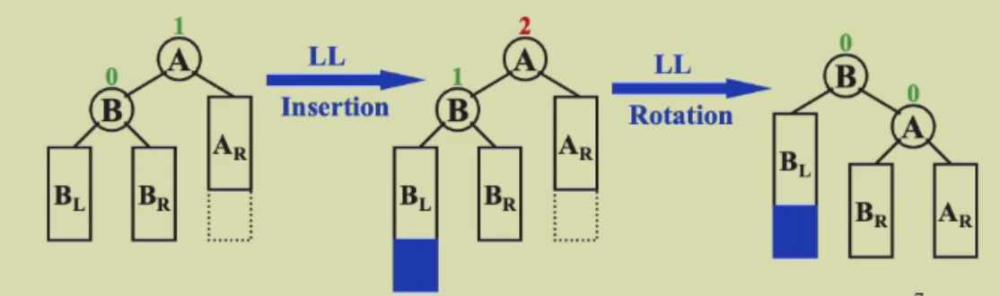
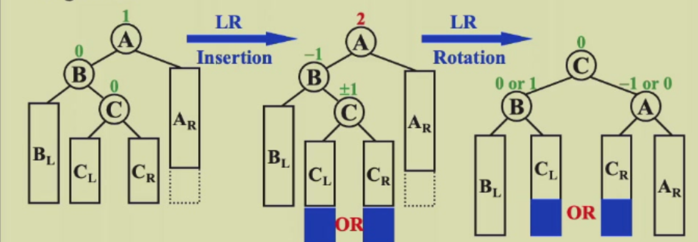
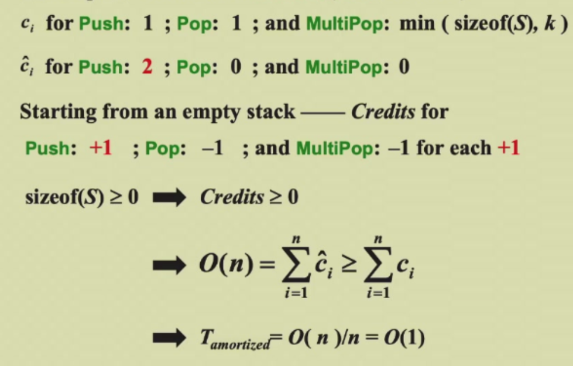
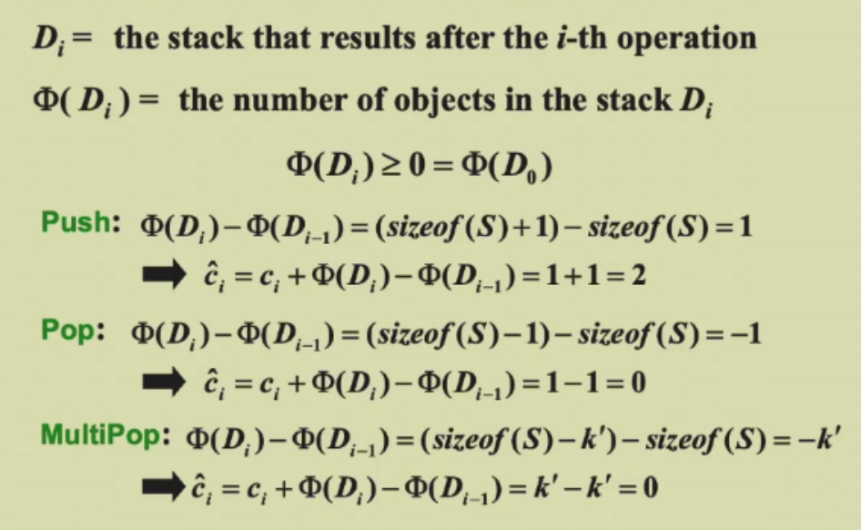
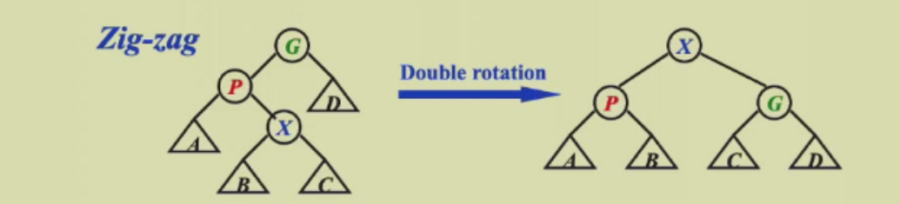
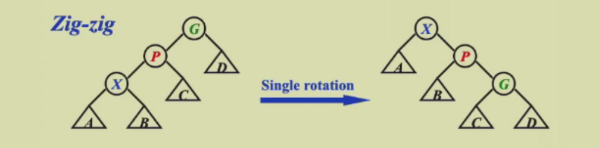
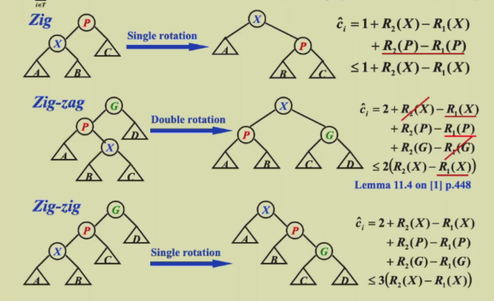

week 1¶
AVL tree¶
定义¶
设计avl tree的目的就是降低树的高度，从而使时间复杂度减低。
定义avl tree:
- 对于每一个节点，他的左右子树都是平衡的；
- 左右子树高度差绝对值不超过1；
height：定义空树的高度为-1，只有一个节点的树的高度为0，以此类推。
balance factor（平衡因子）：\(BF(node)=h_L-h_R\) .
对于avl tree,BF=0，-1，1.
操作¶
旋转：
旋转需要O(1)的时间，旋转的目的是可以改变左右子树的高度差，使树更平衡。
旋转可以看作把某个节点“拎起来”，拎起来的那个节点的子树也会有相应的变化。
插入：
插入完元素后要恢复avl tree的性质，此时从下往上找到第一个BF不正常的节点，此时有两种情况：
- RR/LL case:插入在右（左）儿子的右（左）子树上，此时进行一次旋转； 
- RL/LR case：插入在右（左）儿子的左（右）子树上，此时进行两次旋转； 
可以发现，当节点在一条线上时，一次旋转就能调整好高度；当节点呈现锯齿状，要用两次旋转进行调整。
代码实现¶
avl tree的结构定义，这里使用高度来计算平衡因子，更好维护：
typedef struct _node{
int data;
int height;
struct _node* left;
struct _node* right;
}avltree;
int get_height(avltree* t){
if(t){
return t->height;
}else{
return -1;
}
}
插入的实现，先按照BST的插入方法进行递归，然后进行相应的旋转以维护avltree的性质：
avltree* insert(avltree* t,int x){
if(t){
if(x<t->data){
t->left=insert(t->left,x);
if(get_height(t->left)-get_height(t->right)>=2){
if(x<t->left->data){
t=LL(t);
}else{
t=LR(t);
}
}
}else if(x>t->data){
t->right=insert(t->right,x);
if(get_height(t->right)-get_height(t->left)>=2){
if(x<t->right->data){
t=RL(t);
}else{
t=RR(t);
}
}
}
}else{
t=(avltree*)malloc(sizeof(avltree));
t->data=x;
t->height=0;
t->right=NULL;
t->right=NULL;
}
t->height=max(get_height(t->right),get_height(t->left))+1;
return t;
}
四种旋转的实现，自己画图然后修改对应指针即可，注意高度的维护：
avltree* LL(avltree* t){
avltree* temp=t->left;
t->left=temp->right;
temp->right=t;
t->height=max(get_height(t->right),get_height(t->left))+1;
temp->height=max(get_height(temp->right),get_height(temp->right))+1;
return temp;
}
avltree* RR(avltree* t){
avltree* temp=t->right;
t->right=temp->left;
temp->left=t;
t->height=max(get_height(t->right),get_height(t->left))+1;
temp->height=max(get_height(temp->right),get_height(temp->right))+1;
return temp;
}
avltree* LR(avltree* t){
avltree* temp=t->left->right;
t->left->right=temp->left;
avltree* temp1=t->left;
t->left=temp->right;
temp->left=temp1;
temp->right=t;
t->height=max(get_height(t->right),get_height(t->left))+1;
temp1->height=max(get_height(temp1->right),get_height(temp1->right))+1;
temp->height=max(t->height,temp1->height)+1;
return temp;
}
avltree* RL(avltree* t){
avltree* temp=t->right->left;
t->right->left=temp->right;
avltree* temp1=t->right;
t->right=temp->left;
temp->right=temp1;
temp->left=t;
t->height=max(get_height(t->right),get_height(t->left))+1;
temp1->height=max(get_height(temp1->right),get_height(temp1->right))+1;
temp->height=max(t->height,temp1->height)+1;
return temp;
}
时间复杂度¶
引论：存在某个常数c，使得 \(n \geq c^h\).
证明：设一个高度为 h 的 avl tree 的节点的最少个数为N(h),那么他的左右子树高度分别为N(h-1),N(h-2),不难得出 \(N(h)=N(h-1)+N(h-2)+1\).从而推出N(h)与斐波那契数列有关系：\(N(h)=F_{h+3}-1\)。得出c是与\(\sqrt5+1 \over 2\)有关的常数。
有引论推出，$h \leq \log_c n $,则有h=O(logN).
摊还分析 Amortized Analysis¶
worst-case bound > amortized bound > average bound
摊还分析剔除掉了不可能的情况，最好从一个空的结构开始分析一连串操作的平均花费时间。
以栈操作为例子，有pop,push和multipush( 连续弹出k个，时间复杂度O(k) )三种操作。
聚合分析 Aggregate analysis¶
n次操作的最坏时间为T(n),那么 amortized cost = T(n)/n.
对于栈的例子，最坏情况是push n-1 次，然后multipush 一次。T(n)=2n-2=O(n),摊还复杂度为O(1).
核算法 Accounting method¶
核算法的思想在于取长补短，即我们可以把多出来的消耗存在Credits里，不够时再取出来用。记每一次的摊还成本为 \(\widehat{c_i}\) ,actural cost为 \(c_i\)， 有：\(\(\widehat{c_i}=c_i+credits\)\)
需要注意，我们需保证摊还成本比实际总花费大，即： \(\(\sum_{i=1}^{n}{\widehat{c_i}} \geq \sum_{i=1}^{n}{c_i}\)\) 或： \(\(\sum_{i=1}^{n}credits \geq 0\)\)
例子： 
Potential method¶
由于核算法的均摊成本不一定好设计，所以我们定义第i次操作为\(D_i\),有： \(credits_i=f(D_i)-f(D_{i-1})\)。
这样只要保证 \(D_0\) 最小即可，一个技巧是让他等于0.
例子： 
Splay tree¶
Splay tree的想法是用更少的代价来实现高效的数据结构，他会将每一次查找到的节点移动到根节点上。他实现了：从一个空树开始进行M次操作，那么总的时间复杂度不超过O(MlogN).
注意不是每次操作的时间复杂度都是O(logN),而是均摊下来的总时间复杂度为O(MlogN).
插入¶
用bst的方法进行插入，然后把刚刚插入的节点通过一系列旋转移动到根节点的位置。
定义刚插入的节点为x,父节点为P,父节点的父节点为G.
- zig-zag(锯齿形):对x进行 double rotation，操作与LR/RL case完全相同; 
- zig-zig(一条线)：先提起P,在提起x; 
如此反复操作，直到x到达根节点。
删除¶
- 首先找到要删除的节点，用上述splay方法把他移动到根节点位置
- 删除根节点，此时剩下左右两颗子树 \(T_L\) , \(T_R\) .
- 找到左子树 \(T_L\) 最大的节点，用上述splay方法把他移动到根节点位置，由于这是左子树最大的节点，所以得到的新树没有右子树。因此直接把原来的 \(T_R\) 接到右边即可。
均摊分析¶
前置公式：若 $a+b\leq c $,则 \(loga+logb\leq 2logc-2\)
我们设置的幂函数为子树的点的数量的对数，由于子树点数量可能很多，所以取对数使其变小，更有利于估算出精确的上界。即R(i)=log S(i).其中rank约等于树高。
接下来分析splay tree查询的三种操作,通过放缩，把credit放缩到只与X这个节点有关。同时由于zig-zag和zig-zig可能会操作多次，所以放缩时必须消掉常数2（利用上面的公式）。还有一点技巧，如zig-zag中\(R_1(G)=R_2(X)\):

其中zig-zag和zig-zig不知道会操作多少次，zig至多操作一次，我们都把他们放缩到 \(3[R_2(x)-R_1(x)]\) .由于每次结束时的\(R_2(x)\)是下一次操作的\(R_1(x)\)，所以都会消掉，只剩下最后的 \(\sum_{i=1}^{n}{\widehat{c_i}}=3[R_2(root)-R_1(leaf)]=O(logN)\) ,